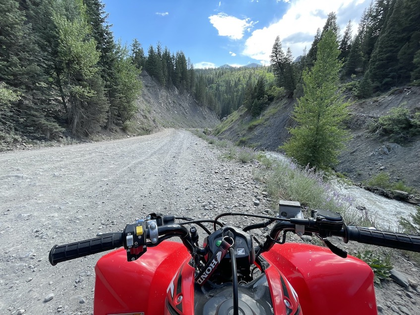

So the youtube video in my website is one of the music from Command and Conquer Red Alert series, that why I used this image, a screenshot from Command and Conquer Red Alert 2 game.
As for why the bottom half of the pentagon take you to the wiki page for Command and Conquer Tiberian Sun.
There are few reasons for that, first, Tiberian Sun is one of my favorite game.
From the full name you can tell that they are from the same series, Command and Conquer.
The first Red Alert game is the prequel to the first Tiberian game.
click on the figurins will take you to the official site for that game.